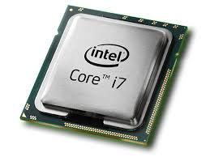

Ein Prozessor ist eine Maschine oder eine elektronische Schaltung, die gemäß übergebenen Befehlen andere Maschinen oder elektrische Schaltungen steuert und dabei einen Prozess oder Algorithmus vorantreibt, was meist Datenverarbeitung beinhaltet.

Hier geht es zurück zur Hardware-Liste